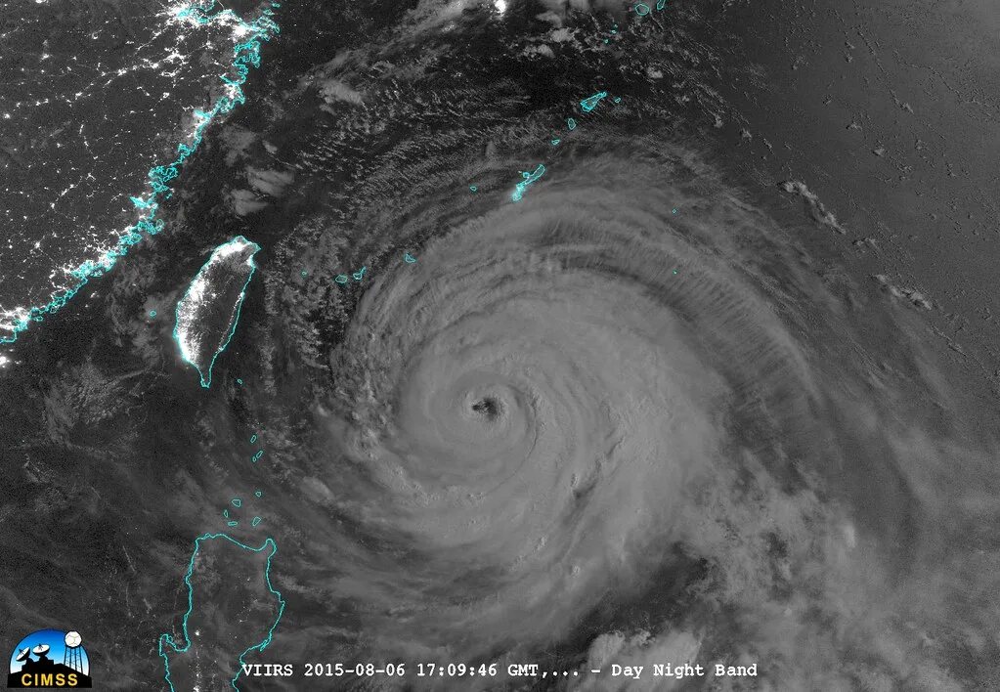

18호 태풍 사우델 북상…한반도 영향 갈림길은 25일 이후 진로
제18호 태풍 '사우델'이 북서진을 이어가며 세력을 키우고 있다. 기상청에 따르면 사우델은 21일 오전 9시 기준 중심기압 985hPa, 중심 부근 최대풍속 초속 27m, 강풍반경 300km의 강도로 괌 동북동쪽 약 490km 해상을 시속 15km로 통과했다. 이후 몸집을 계속 불려 22일부터는 강도 3으로, 23일에는 사실상 정점인 강도 4까지 올라설 것으로 예보됐다. 한반도 남쪽 먼바다에서 발달하는 태풍이 짧은 기간에 이 정도 강도까지 발달하는 사례는 흔치 않다는 게 기상 당국의 설명이다.
사우델은 이후에도 25일까지 강도 4를 유지한 채 북상할 것으로 예상된다. 예상 경로를 보면 25일 오전에는 일본 오키나와 동남동쪽 약 500km 부근 해상까지, 26일 오전에는 오키나와 동북동쪽 약 50km 부근 해상까지 근접할 전망이다. 오키나와 코앞까지 세력을 유지한 채 접근한다는 점에서 일본 남부 지역에는 이미 태풍 대비 경계가 내려진 상태다.

관건은 26일 오키나와 부근을 지난 이후의 진로다. 한반도 영향 여부를 놓고 각국 기상 기관의 예측 모델이 엇갈리고 있어서다. 미국 글로벌예보시스템(GFS) 등 일부 모델은 사우델이 오키나와를 통과한 뒤 방향을 북동쪽으로 틀어 일본 본토를 관통하거나 서일본 해상을 스쳐 지나갈 가능성에 무게를 두고 있다. 이 경로대로라면 한반도는 태풍의 직접 영향권에서는 벗어나지만, 동해안과 남해안 일대가 간접 영향권에 들어 강한 바람과 높은 파도가 일 수 있다는 관측이 나온다.
반면 중국 기상국(CMA)과 유럽중기예보센터(ECMWF)의 수치모델은 사우델이 오키나와를 지난 뒤 계속 서쪽으로 치우쳐 중국 상하이나 닝보 인근 연안에 상륙할 가능성에 더 무게를 싣고 있다. 두 시나리오 모두 태풍이 오키나와 부근까지는 비슷한 경로로 접근하지만, 그 이후 진로가 판이하게 갈리는 셈이다. 기상청은 각 모델의 예측이 수렴하는 시점을 25일 전후로 보고, 그 이후 나오는 관측 자료를 종합해 국내 영향 여부를 다시 판단하겠다는 입장이다.

올여름 유독 강한 태풍이 한반도 인근 해상에서 잇따라 발달하는 배경으로는 예년보다 따뜻한 해수면 온도가 꼽힌다. 태풍은 바다 표면 수온이 높을수록 수증기를 더 많이 공급받아 세력을 키우는데, 8월 들어 남해와 동중국해 일대 수온이 평년보다 높게 유지되면서 사우델처럼 단기간에 강도를 끌어올리는 태풍이 이어지고 있다는 분석이다. 앞서 발생했던 다른 태풍들도 한반도 인근을 비껴가긴 했지만, 이 과정에서 유입된 수증기가 국내 곳곳에 국지성 호우를 뿌리는 간접적인 영향을 남긴 바 있다.
기상청은 사우델의 세력과 진로가 아직 유동적인 만큼, 25일 이후 새로 나오는 예보에 따라 제주도와 남해안 지역을 중심으로 강풍·풍랑 특보가 발표될 가능성을 열어두고 있다고 밝혔다. 해안가 저지대 주민이나 어선을 운항하는 경우 최신 특보 상황을 수시로 확인할 필요가 있다는 게 당국의 당부다.
추석을 한 달가량 앞둔 시점에 태풍 소식이 전해지면서, 성수품 수급이나 벌초·성묘 등 야외활동 계획에 영향이 있을지에도 관심이 쏠린다. 다만 아직 태풍의 한반도 상륙 여부 자체가 불확실한 단계인 만큼, 기상 당국은 섣부른 예단보다는 이후 발표되는 정식 예보를 확인해달라고 재차 강조했다.